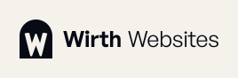
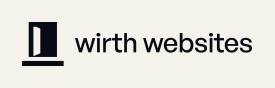
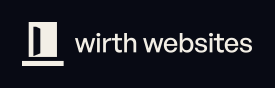

Vier Richtungen, jeweils als Wortmarke mit Bildmarke und als Bildmarke allein – in Farbe auf Papier und Nacht, in Favicon-Größen und einfarbig. Alle Schriften sind in Pfade umgewandelt; die SVG-Dateien funktionieren ohne Webfonts.
Empfehlung: Option 2. Der Torbogen trägt die Idee »gern zu Gast« weiter, bleibt als volle Fläche auch bei 16 px klar und funktioniert einfarbig ohne Verlust. Wer die Serife der Website auch im Logo möchte, wählt Option 1.
Die bestehende Bildmarke, geschärft: Der Türbogen steht für »gern zu Gast«, das W steht auf der Schwelle. Kräftigere Linien machen sie favicon-tauglich; die Wortmarke folgt der Website – Newsreader, »Websites« kursiv.
Dateien: lockup-dark · lockup-light · mono-black · mono-white · icon · icon-mono-black · icon-mono-white
Ein voller Torbogen mit ausgespartem W: ein ruhiges, flächiges Siegel, das auch bei 16 px eindeutig bleibt. Die sachliche General Sans hält die Wortmarke modern und gut lesbar.

Dateien: lockup-dark · lockup-light · mono-black · mono-white · icon · icon-mono-black · icon-mono-white
Eine angelehnte Tür auf ihrer Schwelle: Licht fällt heraus, Sie sind willkommen. Ganz ohne Buchstaben – ein Zeichen, das für den Gastgeber spricht. Dazu eine ruhige Wortmarke in Kleinbuchstaben.


Dateien: lockup-dark · lockup-light · mono-black · mono-white · icon · icon-mono-black · icon-mono-white
Die Schrift ist das Bild: Ein großes Newsreader-W trägt beide Wörter – »irth« steht aufrecht, »ebsites« kursiv. Editorial wie die Website; das W allein dient als Bildmarke.
Dateien: lockup-dark · lockup-light · mono-black · mono-white · icon · icon-mono-black · icon-mono-white